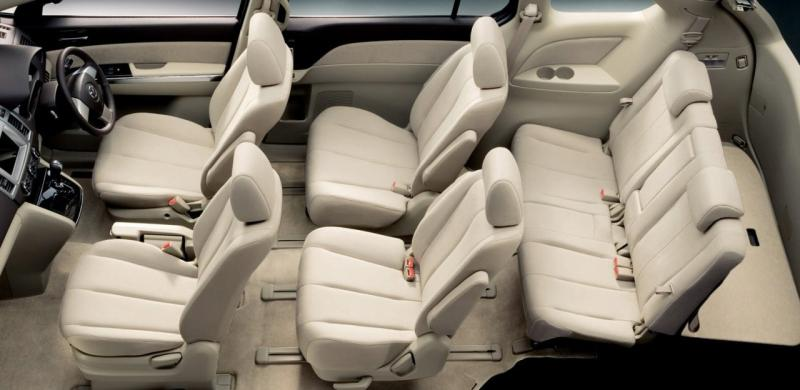

MARUTI ERTIGA
Maruti Suzuki Ertiga enables you to enjoy your moments together while adding a touch of style to them. With its exciting features, Maruti Suzuki Ertiga makes every journey look elegant.
REVIEW
The compact utility vehicle segment was almost non-existent till the introduction of the Maruti Suzuki Ertiga in 2012. Unlike conventional UVs, the Ertiga felt, looked and drove like a car, which also became the recipe for its success. The carmaker called it the LUV (Life Utility Vehicle), an offering targeted at urban families looking for three rows in compact dimensions.
The 2018 Ertiga is an all-new model based on a new platform and will get new engines as well. It is expected to share the 1.5-litre K15B petrol engine with the Ciaz, and feature a new 1.5-litre diesel engine as well. Both engines are likely to feature Suzuki’s “SHVS” mild-hybrid tech. The 7-seater MPV is bigger than before, has more space (and bootspace) and is also packed with a lot more features. We’re expecting prices to go north, and possibly start around the Rs 7.5 lakh mark.

The Ertiga recently underwent a midlife makeover and received some subtle changes inside-out. Also, the mild-hybrid SHVS setup has now been added to make the package more efficient. Up front, the most prominent styling change comes in the form of a new 3-slat chrome radiator grille that replaces the earlier all-black honeycomb unit.A relatively thicker strip of chrome sits just beneath the bonnet shut line, whereas the two chrome slats below follow a curve and lend a smiling face to the Ertiga, as against the earlier face that looked blunt and boring.
The bumper has also been redesigned and now incorporates a smaller air dam that’s almost square in shape. This in turn has released some extra space for the fog lamp housings. The fog lights continue to be round, but get some extra shine, all thanks to the chrome-lined eyebrows.
The side profile of the new Ertiga remains almost identical to the previous version. The flared wheel arches alongside a sharp crease connecting at the lower end work well to add some muscle to the otherwise plain-looking side.

The 1.3-litre diesel unit under the hood of the Ertiga gets tuning similar to the Ciaz and the S-Cross. Having a variable geometry turbo instead of a fixed one, the engine produces 90PS of power at 4,000rpm and 200Nm of peak torque at 1,750 rpm. Twist the ignition key and the engine settles down into a very refined idle, with very little of it audible inside the cabin. The unit feels most comfortable and happy during relaxed cruising on the highway, but driving in the city reveals the serious lack of punch at lower revs. But once the turbo kicks in post the 2,000rpm mark, there is a strong surge, accompanied by an even spread of power, and the motor doesn’t let you complain. The smooth-shifting five-speed gearbox, combined with a light clutch will come as relief for the driver.
Despite having a soft suspension, the handling isn’t too bad. It takes corners with relative ease and the steering is quite precise. Body-roll is well managed and while the steering is communicative at high speeds, it’s equally light to use in the city.

The Ertiga’s cabin is familiar, but gets a few differentiators. While the dash design and the whole cabin layout is similar to the Swift and DZire, the colour scheme is entirely different. It gets a mix of beige and brown instead of the black and beige combination of the Dzire and the Swift’s all-black.
The main motive behind the use of lighter colours is to make the cabin feel bright, airy and spacious, and we must say Maruti has passed this test with distinction. The steering wheel, gear knob, seats and even the carpets are beige, so maintaining the cabin will not be an easy job.
Talking about the storage space, all doors get bottle holders and some additional space for keeping small items. There’s a cup-holder for the driver placed in front of the gear stick, whereas the front occupant gets a pop-out cup-holder right below the aircon vent. Both front seats get seat-back pockets. The third row passengers get armrests integrated into the wheel arch bulges, and cup holders as well.

All variants get a driver airbag. An airbag for the front passenger is optional on the base variants, while the rest get it as standard. ABS is optional only with the base petrol variant, while all other variants get it as standard.
Both, the petrol and diesel versions are offered in 4 variants, with the base variants available with option packs to add safety features.
The SmartPlay infotainment system can only be found in the top-spec Z variants. The V gets an infotainment system like the old model but gets speakers and Bluetooth connectivity. You will get parking sensors in the model as well. Parking sensors, electrically foldable wing mirrors and alloy wheels are available only with the Z grades.

Maruti Suzuki’s hasslefree ownership makes the Ertiga an ideal choice in the economical MPV space
Despite being a 7-seater utility vehicle, the Maruti Ertiga feel and drives like a car.
Fuel efficient engines. The Maruti Suzuki Ertiga delivers an impressive 24.52kmpl with its diesel engine and 17.5kmpl with its petrol motor.
The Maruti Suzuki Ertiga’s compact dimensions make it easy to park even in tight spots.
The Maruti Ertiga’s compact proportions and spacious cabin make it an ideal family car. Competitive pricing and Maruti Suzuki’s service backing works as an icing on the cake for this MPV.
The seats in the Ertiga are placed much higher than in the Swift and Dzire. The front occupants get really comfortable seats and the view out of the windscreen is brilliant. The driving position is very un-UV–like, and one gets the impression of driving a Dzire on stilts. The top-spec trim also comes with driver seat height adjustment.
Legroom in the second row is generous, while the third row is suited only for small journeys. With the third row down, the second row can slide all the way back, liberating decent legroom.

Experience superior mileage every time you hit the road. The 1.4L petrol engine with advanced VVT (Variable Valve Timing Technology) optimizes intake-valve timing which refines power delivery and boosts fuel efficiency.
Maruti Suzuki Ertiga's class-leading Smart Hybrid Technology has the Integrated Starter Generator (ISG) Motor that regenerates energy every time you apply the brakes and then assists the engine to drive the vehicle. Some of the Smart Hybrid Features are - Idle Stop Start, Torque Assist Function, Brake Energy Regeneration and Gear Shift Indicator.